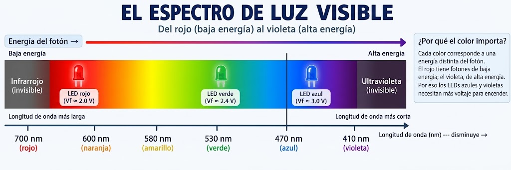
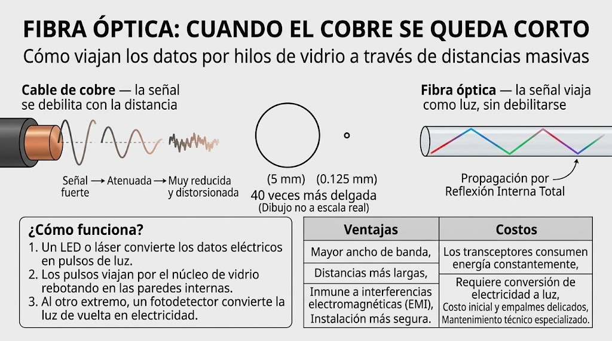
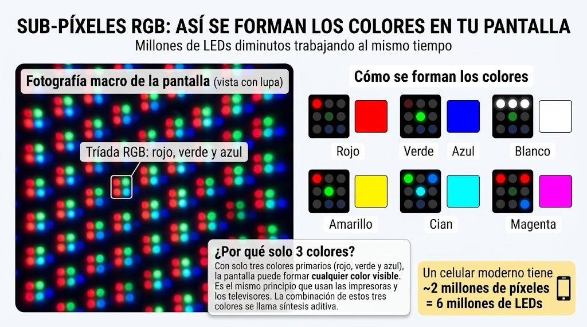
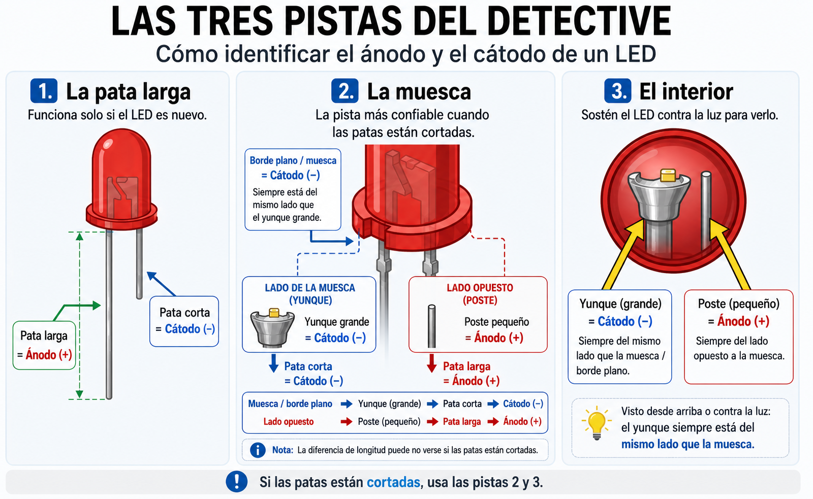
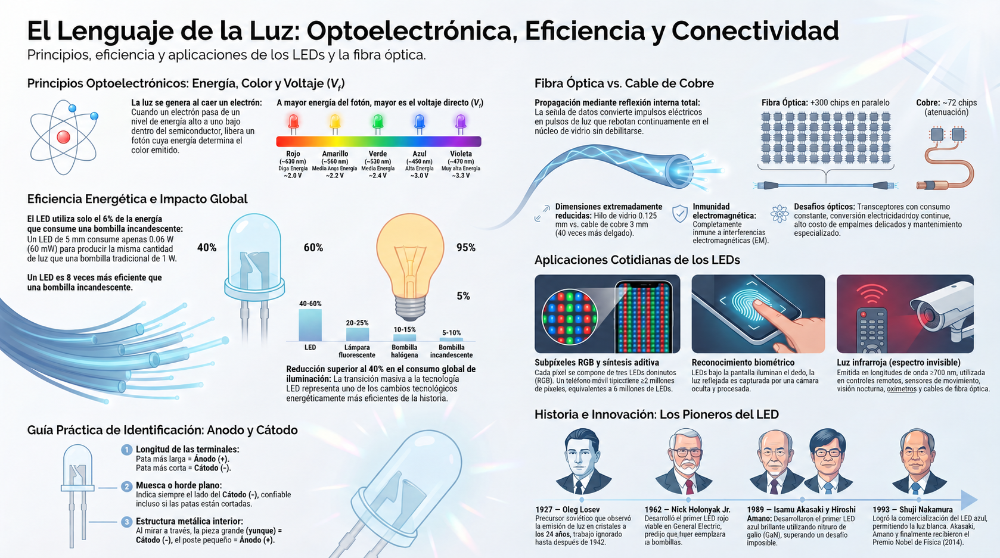

Cada color de luz que emite un LED tiene una energía distinta. Esa energía determina el voltaje directo (Vf) del componente. A mayor energía del fotón, mayor Vf.
| Color | Longitud de onda | Energía del fotón | Vf típico |
|---|---|---|---|
| Rojo | ~650 nm | Baja | ~2.0 V |
| Amarillo | ~590 nm | Media-baja | ~2.2 V |
| Verde | ~530 nm | Media | ~2.4 V |
| Azul | ~450 nm | Alta | ~3.0 V |
| Violeta | ~410 nm | Muy alta | ~3.3 V |

💡 La relación fundamental: cuando un electrón cae desde un nivel de energía alto a uno bajo dentro del semiconductor, libera un fotón. La energía de ese fotón (y por lo tanto el color de la luz) está determinada por la distancia entre esos niveles. Los LEDs azules necesitan un semiconductor con niveles más separados que los rojos. De ahí que requieran más voltaje.
🔬 ¿Sabes cómo se llama todo esto? La optoelectrónica es el campo de la ingeniería que estudia los dispositivos que convierten electricidad en luz (como los LEDs) y luz en electricidad (como los sensores de las cámaras). Los LEDs, los láseres, las pantallas, los sensores de huella y las cámaras digitales son dispositivos optoelectrónicos. Es uno de los campos más activos de la ingeniería moderna.
Cuando hablamos de "eficiencia" de un LED, es fácil confundir dos cosas que son diferentes: cuánta energía consume y qué fracción de esa energía se convierte en luz. Vamos a separar los dos conceptos.
| Tecnología | Eficiencia luminosa | Vida útil | Luz por vatio |
|---|---|---|---|
| Bombilla incandescente | 5–10% | 1,000 h | ~15 lm/W |
| Bombilla halógena | 10–15% | 2,000 h | ~25 lm/W |
| Lámpara fluorescente | 20–25% | 8,000 h | ~60 lm/W |
| LED | 40–60% | 50,000 h | ~120 lm/W |
Un LED típico de 5 mm consume aproximadamente 60 mW (0.06 W) para producir una cantidad de luz determinada. Una bombilla incandescente que produce la misma luz consume aproximadamente 1 W. Calcula la relación:
El LED necesita apenas el 6% de la energía que consume la bombilla para producir una cantidad de luz comparable. A gran escala, multiplicado por millones de luces en una ciudad, esa diferencia es gigantesca.
Ahora bien, la eficiencia es otra cosa: mide qué fracción de la energía eléctrica se convierte en luz, y qué fracción se pierde como calor.
Comparando eficiencias:
Un LED convierte ocho veces más energía en luz que una bombilla incandescente. Esa diferencia, multiplicada por millones de luces, explica por qué el mundo está reemplazando las bombillas con LEDs.
🌍 Impacto global: según estudios internacionales, la transición mundial de bombillas incandescentes a LEDs ha reducido el consumo eléctrico global de iluminación en más de un 40% en la última década. Es uno de los cambios tecnológicos más eficientes en energía de la historia reciente.
Los cables de cobre condujeron electricidad durante más de un siglo. Pero tienen un límite: a distancias muy largas, las señales eléctricas se debilitan y el ancho de banda se satura. Por eso los centros de datos modernos están reemplazando el cobre por fibra óptica: hilos de vidrio que transportan datos como pulsos de luz.

Con cable de cobre, un sistema puede conectar un número limitado de chips (por ejemplo, hasta 72 en algunos supercomputadores actuales). Con fibra óptica, ese número se multiplica: un solo sistema puede conectar más de 300 chips trabajando en paralelo, usando miles de conexiones ópticas.
La fibra óptica no es una tecnología sin problemas. Tiene ventajas claras, pero también desafíos que la industria está aprendiendo a manejar.
| Ventajas | Costos |
|---|---|
| Mayor velocidad y ancho de banda | Los transceptores ópticos consumen energía constantemente |
| Distancias mucho más largas sin pérdida | Requiere conversión de electricidad a luz y viceversa |
| Inmune a interferencias electromagnéticas | Los módulos ópticos pueden fallar bajo trabajo intensivo |
| Permite conectar más chips | Requiere mantenimiento constante |
💡 Lección de ingeniería: ninguna tecnología es perfecta. Cada avance trae ventajas y nuevos problemas. Los ingenieros eligen el equilibrio que mejor se adapte a cada caso, sin dejar de buscar mejores soluciones.
Ya sabes que la pantalla de tu celular está hecha de millones de LEDs. Pero hay otras aplicaciones sorprendentes que usas casi sin darte cuenta.
Cada píxel de la pantalla de tu celular no es una sola luz, sino tres LEDs diminutos: uno rojo, uno verde y uno azul. Combinando la intensidad de cada uno, la pantalla puede mostrar cualquier color del espectro.

🔍 Experimento en casa: pon una gota de agua sobre la pantalla blanca de tu celular y mira a través de ella como si fuera una lupa. Vas a ver los sub-píxeles rojos, verdes y azules. Si la pantalla está apagada y la luz del ambiente es tenue, se ven aún mejor.
Muchos celulares actuales tienen un lector de huellas integrado en la pantalla. La tecnología funciona así:
Los LEDs no solo te muestran información: también reconocen tu identidad. Es una de las aplicaciones más ingeniosas de la optoelectrónica moderna.
No toda la luz que emite un LED es visible para el ojo humano. Los LEDs infrarrojos emiten luz con una longitud de onda mayor que la del rojo (por encima de 700 nm). Nuestros ojos no la captan, pero algunos dispositivos sí.
Cuando presionas un botón del control del televisor, el LED infrarrojo emite una ráfaga de pulsos de luz invisible. El televisor tiene un sensor que los interpreta y ejecuta la acción: subir el volumen, cambiar de canal, apagar.
🔍 Experimento en casa: apunta el control del televisor hacia la cámara de tu celular. Presiona cualquier botón mientras miras la pantalla del celular. Vas a ver un punto violeta o blanco parpadeando: es el LED infrarrojo. Tus ojos no lo ven, pero la cámara del celular sí.
Los LEDs infrarrojos no solo están en los controles remotos. También se usan en:
La luz invisible también es parte del lenguaje de los LEDs. El espectro electromagnético es mucho más amplio que lo que nuestros ojos pueden percibir.
Vamos a medir el Vf y la corriente de diferentes LEDs, calcular su potencia eléctrica y compararla con la de una bombilla incandescente. Así descubrirás por qué el LED cambió la historia de la iluminación.

| LED | Color | Vf medido | I calculada | P calculada |
|---|---|---|---|---|
| 1 | ||||
| 2 | ||||
| 3 | ||||
| 4 |
Ahora puedes calcular la eficiencia aproximada de un LED. Si un LED convierte el 40% de la energía eléctrica en luz (y el 60% en calor), y una bombilla incandescente convierte solo el 5% (y el 95% en calor), la diferencia es enorme:
Un LED convierte ocho veces más energía en luz que una bombilla incandescente. Esa diferencia, multiplicada por millones de luces, explica por qué el mundo está reemplazando las bombillas con LEDs.
Si los LEDs son tan eficientes, ¿por qué las bombillas incandescentes siguieron usándose durante casi un siglo? Piensa en el costo inicial, la disponibilidad, la tradición y otros factores que influyen en las decisiones tecnológicas.
⚠️ Seguridad: trabaja siempre con 3V o 5V. Nunca uses voltajes de pared (110V o 220V). Siempre usa la resistencia de protección con el LED.
El LED que hoy ilumina tu pantalla no lo inventó una sola persona. Fueron cuatro científicos, en tres países, durante casi un siglo. Y antes que ellos hubo un precursor al que nadie escuchó.
Mucho antes de que nadie supiera qué era un semiconductor, un joven científico soviético observó algo extraño: ciertos cristales emitían luz al paso de la corriente. Era 1927. Oleg Losev tenía solo 24 años.
Publicó 16 artículos sobre el fenómeno, pero nadie le hizo caso. La tecnología de la época no permitía aprovechar el descubrimiento. Losev murió durante el sitio de Leningrado, en 1942, con solo 38 años, sin haber visto el reconocimiento de su trabajo.
Hoy se le reconoce como el verdadero descubridor del fenómeno del LED. Su historia cierra el círculo: desde un laboratorio soviético en 1927, hasta la pantalla del celular que tienes en la mano.
Holonyak inventó el primer LED visible en 1962, mientras trabajaba en General Electric. Era hijo de inmigrantes ucranianos y creció en una familia humilde. Cuando presentó su invento, muchos colegas se rieron: decían que el LED era un "juguete de laboratorio", incapaz de reemplazar a las bombillas incandescentes.
Holonyak no se rindió. Predijo que algún día los LEDs reemplazarían a las bombillas. Murió en 2022, habiendo visto su predicción cumplirse.
Durante décadas, los científicos intentaron crear un LED azul. Era considerado imposible. Los grandes laboratorios de Japón, Estados Unidos y Europa habían fracasado.
Pero Akasaki y Amano, trabajando en la Universidad de Nagoya, lograron el primer LED azul brillante en 1989, usando nitruro de galio. Su trabajo inspiró a otros científicos y abrió el camino hacia la iluminación moderna.
Nakamura trabajaba en una pequeña empresa desconocida (Nichia) y no tenía doctorado. Mientras los grandes laboratorios gastaban millones en investigaciones complicadas, él probó métodos poco convencionales. En 1993, logró el LED azul comercial, permitiendo la creación de LEDs blancos y la iluminación moderna.
En 2014, los tres —Akasaki, Amano y Nakamura— recibieron el Premio Nobel de Física por su trabajo. Gracias a ellos hoy podemos tener pantallas LED, luces eficientes y todo lo que usa luz blanca brillante.
Los cinco comparten un rasgo común: insistieron cuando otros decían que era imposible. Losev murió sin reconocimiento. Holonyak fue ridiculizado. Akasaki y Amano trabajaron en un campo que nadie creía posible. Nakamura no tenía el currículum esperado. Juntos cambiaron la historia de la luz.
Fuentes: archivos históricos del Premio Nobel de Física, biografías de General Electric, Nichia Corporation y archivos soviéticos de investigación.
La luz no es solo iluminación: es información. Dale play y descubre cómo los LEDs hablan el idioma de la inteligencia artificial.
💡 Ten tu cuaderno a mano: hay cálculos y conceptos que querrás anotar.